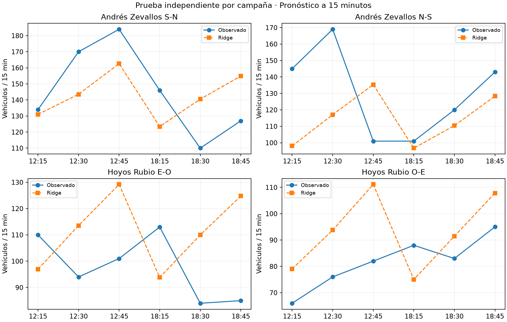

Intersección Hoyos Rubio y Andrés Zevallos · Datos históricos de Cerna Loyola
Evaluación histórica con dos campañas y franjas de una hora. La transferencia al tránsito actual requiere nuevos aforos.
24 pronósticos a 15 minutos. Selección del modelo mediante validación por bloques en la primera campaña.

Consultar tesis original · Descargar conteos · Descargar evaluación